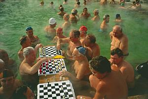

|
|
|
|
|
|
|
| BEST OF BUDAPEST |
| |

|
| |
| Das Beste im Sommer |
| |
|
|
| |
| vornehm und elegant |
| |
|
|
| |
| Türkische
Heilbäder |
| |
|
|
|
|
|
|
|
|
| |
| weitere Heilbäder |
| |
|
|
|
|
|
|
|
|
| |
| Heilbäder in
Hotels |
| |
|
|
|
|
|
|
| |
| Strandbäder |
| |
|
|
|
|
|
|
|
|
|
|
|
|
| |
| Kur und Wellness |
| |
|
|
|
|
| |
| |
| |
|
|
| |
| |
|
|
Széchenyi
Heilbad mit Trinkhalle und Kurbetrieb in Budapest |
| |
Adresse:
H-1146
Budapest, Állatkerti krt. 1
...links
hinter dem Heldenplatz
Öffnungszeiten:
01.
05. - 30. 09.
06-19 Uhr,
01.
10. - 30. 04. 06-16 Uhr
Das
Széchenyi Heilbad ist ganzjährig
geöffnet, auch die drei Außenbecken unter freiem
Himmel im
Hofbereich.
Die
U-Bahnhaltestelle "Széchenyi
fürdő" der gelben Linie 1 hält direkt
vor dem
Bäderkomplex. Das Bad hat drei Eingänge, ein davon
ist direkt an dieser U-Bahnhaltestelle.
Drei
größere
Badebecken gibt es im Innenhof und 12 weitere im
Gebäude. Besonders beliebt ist das 38°C warme
Thermalbecken im Hof, wo laufend Schach gespielt wird. |
|
|
 |
Die tiefsten und
heißesten
Thermalquellen in Budapest hat das Széchenyi-Bad zu bieten -
bis heute
einer der größten Bäderkomplexe Europas. Es
wurde Anfang des 20.
Jahrhunderts wie ein Palast Stück für Stück
um ein riesiges
Schwimmbecken herum
gebaut. Insgesamt gibt es hier ganze 15 Bassins, gespeist aus
heißen Quellen, sodaß man im Freien auch in Winter
z.B. gemütlich Schach spielen kann. Das
Schwimmbecken im
Hofbereich ist mit 26°C angenehm warm. |
Im
Vordergrund steht der monumentale Gebäudekomplex des
Széchenyi
Heilbades mit drei Badebecken
im Hofbereich. Der
medizinische Kurbetrieb befindet sich im
Gebäude vorne rechts
am Bild.
Im
Hintergrund links sind die Kuppeln des Elefantenhauses im Zoo zu
sehen, rechts davon das riesige, winterfeste Rundzelt des Staatszirkus,
das z.T. fest gebaut ist. Rechts im oberen Eck steht das alte Riesenrad
im Vergnügungspark "Vidámpark". |
|
|
Erbaut
im Stile des Versailler Schlosses ist "Széchenyi"
seit
Jahrzehnten der beliebteste und
meistbesuchte Badebetrieb
der
Budapester Bevölkerung und wird auch von Ausländern
am meisten besucht. |
 |
 |
Mehrere
Saunaräume,
einige feuchte und trockene Dampfkammer und
eine
medizinische Abteilung
mit
vielen therapeutischen Anwendungen sorgen für
das Wohlbefinden der Gäste bei jedem Wetter.
Badetemperatur:
20-38°C
|
|
 |
Die mit
wunderschönen Glasmosaiken verzierte Kuppelhalle am
Eingang vom Stadtpark zählt zu den schönsten und
prächtigsten Teilen des gesamten Gebäudes.
Trinkhalle:
Außerhalb des Badekomplexes nicht nur für
Badegäste
zugänglich gibt es eine Trinkhalle, wo das
abgekühlte Quellwasser zu Trinkkuren ausgeschenkt und
auch zum Mitnehmen verkauft wird.
|
 |
Trinkkuren
werden
bei Magen- und Darmleiden, sowie bei chronischen Entzündungen
der Gallenwege und Atmungsorgane empfohlen. Ein Glas Heilwasser nach
dem Bad
hilft auch gegen den Jo-Jo-Effekt.
|
 |
Der
Kurbetrieb
und das Erlebnisbad mit Schwimm-, Dampf- und Thermalbad sind
wunderbar ineinander integriert. Jung und alt, gesund oder
kurbedürftig - jeder Gast findet sein Wohl im
Széchenyi
Heilbad. Es ist ein gelungener Badebetrieb für die ganze
Familie.
Alle Einrichtungen des Bades, so auch der riesige Kurbetrieb,
können von jedem Gast in Anspruch genommen werden - ein
unvergessliches Erlebnis in allen Jahreszeiten. |
Dienstleistungen:
Herren und Damen Thermalbad, Gemeinschaftsbad, physiotherapeutische
Abteilung,
Sauna, Feuchtdampf- und Warmluftkammer, Massagen, Trinkkuren.
Ausländische
Kurgäste können ärztlich untersucht werden.
Es kann auch sinnvoll sein, vom Hausarzt ein
Attest für die notwendige Kurbehandlung mitzunehmen.
Zusammensetzung
des Heilwassers:
kalzium-, magnesium-, hydrogenkarbonat- und sulfathaltiges Heilwasser
mit Natrium, Fluorid und Metabohrsäure.
Indikationen: In
der Tagesklinik des Széchenyi Heilbades werden chronische
Beschwerden der Bewegungsorgane, Gelenk-erkrankungen,
Bandscheibenvorfall, Hexenschuss und Unfall-patienten speziell
nach Knochen- und Gelenkoperationen behandelt.
|
 |
Geschichtliches
-
An dieser Stelle wurde 1881 ein „Artesisches Bad”
eröffnet, das erste
Bad in Budapest, in welches das Heilwasser aus einem fast 1000 m tiefen
Brunnen eingespeist wurde. Die Bauarbeiten des zentralen Teils des
heutigen Széchenyi-Heilbades begannen 1909 nach den
Plänen
des
Professors Dr. Siegmund
Cziegler. Die Eröffnung fand am 16. Juni
1913
statt. 1927 wurde das Bad mit zwei weiteren Becken im Hofbereich, dem
Schwimm- und Strandbad erweitert. Es entstand damals der
größte Bäder-Komplex Europas, der noch
heute zu den größten Heilbädern
zählt. Seit 1938
versorgt ein 1256
Meter tiefer Brunnen das Bad mit dem an der Austrittstelle 76°C
warmen
Thermalwasser. |
|
Aus
dem Stadtzentrum
ist das Széchenyi Thermalbad mit
der U-Bahnlinie 1 schnell zu
erreichen ist. - Übrigens: Die U-Bahn wird in Budapest Metro
genannt. |
 |
| |
Ungarn-Tourist Team

|
 |
| |
|
|


 In
keinem
anderen Land und in keiner
anderen Großstadt der Welt gibt es so viele Thermal- und
Heilquellen,
In
keinem
anderen Land und in keiner
anderen Großstadt der Welt gibt es so viele Thermal- und
Heilquellen,